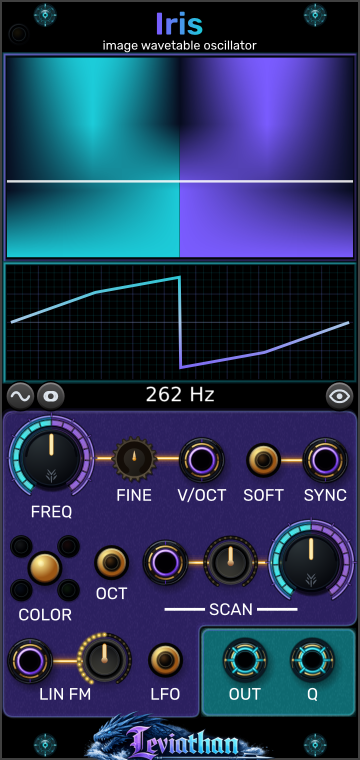

Source field, waveform, and frequency
Two displays and the readout below
The upper display shows the field and scan positions; the lower display shows the selected waveform. The frequency readout follows channel one’s base pitch before linear FM.
Leviathan for VCV Rack 2 · Open Source
A 12 HP polyphonic oscillator that turns image rows and fractal fields into smoothly scanned waveforms.

Images into waveforms
Iris reads a visual source as a bank of single-cycle waveforms. Across each horizontal row, pixel intensity becomes waveform amplitude; moving vertically through the source selects another waveform. FREQ sets how fast the selected waveform repeats, while SCAN moves between rows. Scanning changes timbre without requiring the pitch to change.
Load an image directly or use Nautiloid to generate a fractal source. Iris supplies the oscillator, pitch tracking, FM, sync, and outputs in both cases. Nautiloid supplies an explorable source field.
The source is resampled into a 1024 × 256 RGB field. The normal table has 256 rows of 1024 samples each; trimming can reduce the row count. The oscillator interpolates through the table. This is image-derived synthesis: it does not play an image as a recording.
First patch
A source with strong horizontal variation produces a more varied cycle. Rows with nearly constant intensity can produce a flat or weak result. Try another scan position or source if the output is uninteresting.
Panel breakdown
Click a numbered marker to jump to its description. The separate connection view below identifies the jacks.
Two displays and the readout below
The upper display shows the field and scan positions; the lower display shows the selected waveform. The frequency readout follows channel one’s base pitch before linear FM.
Top-left edge
Amber means Nautiloid is attached but its source is pending or not selected; green means Iris has accepted a Nautiloid source.
Large upper-left knob
Main oscillator frequency. In Audio mode the continuous knob range is 10 Hz–10 kHz; in LFO mode it is 0.01–100 Hz. Pitch CV and FM can extend the resulting frequency beyond the knob range, subject to internal limits.
Small knob beside FREQ
Fine tuning from −100 to +100 cents.
Gold button below V/OCT
Toggles octave-stepped coarse tuning. The coarse pitch snaps to whole octaves relative to C4; FINE and V/OCT still apply.
Large right-hand knob
Sets the base scan position from 0–100%. The CV contribution is added and the result is clamped to that range.
Small knob left of SCAN
Bipolar depth for the SCAN input, −100% to +100%; default zero. Negative settings reverse the CV contribution.
Small knob beside LIN FM input
Depth of the AC-coupled linear-FM input. Higher amounts also introduce drive into the FM control response.
Gold button beside SYNC
Toggles hard and soft sync. Hard sync resets phase to zero. Soft sync reflects the current phase around the cycle boundary.
Gold button beside the outputs
Switches the coarse frequency range between Audio and LFO.
Gold button and four channel indicators
Cycles All/luma → Red → Green → Blue. This changes the channel used to generate the table and therefore changes the sound.
Wave icon below the waveform display
Opens the Smoothing menu, including normalization, row order, trimming, DC removal, and inversion.
Source icon beside the wave icon
Selects Image file... or Nautiloid. Choosing Nautiloid creates the left-side companion if it is not already attached.
Eye icon below the displays
Toggles the upper display between the converted waveform field and the selected source color-channel view. This changes the view without changing the conversion settings.
At low frequencies a moving tracer helps show phase. The eye button changes the upper display view; COLOR changes the channel used for sound generation.
CV, outputs, and polyphony
Purple-ringed jacks are inputs; cyan-ringed jacks are outputs. These numbers continue from the controls view.
Upper row, between FINE and SOFT
1 V/octave pitch control, added to coarse and fine tuning. Supports polyphonic pitch.
Lower-left jack
AC-coupled frequency modulation, scaled by LIN FM amount. A steady DC offset is rejected; use V/OCT for static pitch changes.
Middle input beside the scan attenuverter
Scan offset: 10 V spans the full table at +100% depth. Effective scan = knob + (CV ÷ 10 V) × attenuverter, clamped to 0–100%. For example, a ±5 V LFO at full depth sweeps across the full table when the knob is centered at 50%.
Upper-right input
A rising trigger synchronizes each voice according to SOFT. Supports corresponding polyphonic channels.
Left cyan output
Main wavetable output, scaled by 5 V per unit waveform amplitude. Actual level and DC content depend on the source and conversion settings.
Right cyan output
The same table read one quarter-cycle ahead of OUT. It is a 90° phase offset, rather than an inverted copy. Both outputs carry the same voice count.
Iris supports up to 16 voices. The greater channel count at V/OCT or SCAN sets the output voice count, with a minimum of one. LIN FM and SYNC modulate those voices but do not create additional voices by themselves. Where a voice has no matching V/OCT channel, it uses pitch channel one; mono SCAN, LIN FM, and SYNC signals are shared through Rack’s polyphonic input handling.
Polyphonic SCAN can give several voices different timbres at a common pitch. Combine polyphonic pitch and scan to make each note explore a different part of the image.
Smoothing and conversion
Click the wave icon to open Smoothing. These options rebuild the table from the current source; they do not require the original image file while that source is still available. New tables crossfade into playback over approximately 30 ms.
| Control | Function |
|---|---|
| Seam smoothing | Blends the beginning and end of each row toward a common edge value. Use it to soften the jump where the waveform loops; this also changes the cycle shape. |
| Wave smoothing | Smooths the samples within each waveform cyclically. Increasing it reduces fine detail and can soften a bright, jagged source. |
| Normalize → Balanced | Default. Uses the image-wide intensity distribution to balance positive and negative waveform ranges while reducing the influence of extreme outliers. |
| Normalize → Global | Uses one minimum/maximum range across the whole table. Preserves relative level differences between rows. |
| Normalize → Per row | Centers and scales each non-flat row independently. Can make quiet rows more prominent and reduce level variation while scanning. |
| Normalize → Off | Leaves normalization off. The image intensity mapping and other selected conversion operations still apply. |
| Row order | Top to bottom (default) or Bottom to top. Reverses the order of rows in the table. The source-channel view remains in the original source orientation. |
| Trim flat rows | Off (default), Gentle, Medium, or Aggressive. Removes rows whose amplitude variation is below the selected threshold, retaining at least two endpoint rows if too few remain. This changes how scan positions map to the source. |
| Per-row DC removal | Subtracts each row’s mean. Useful when a source produces a large static offset. Off by default. |
| Invert conversion | Reverses waveform polarity during conversion. Off by default. |
Seam smoothing and Wave smoothing default to zero. Normalization and DC removal affect the result differently: centering the table as a whole does not guarantee that every individual row has zero mean.
Sources and patch storage
| Control | Function |
|---|---|
| Load image... | Imports a new image and rebuilds the table. Also available through the source button or file drag and drop. |
| Reload image | Attempts to reload the original file from its saved path. Disabled when there is no path. If reload fails and a valid current source is available, that source is preserved for rebuilding. |
| Clear image | Returns to the built-in Sine / Triangle / Saw / Square table and clears the image source. SCAN morphs through those shapes. |
| Embed image source in patch | Enabled by default. Saves the canonical RGB image source with the patch, so image-based tables can be rebuilt and color channels changed without the original external file. |
Embedding stores the resampled source rather than the full-resolution original image. With embedding disabled, an image patch depends on the original file path; keep that file accessible when moving the patch. Missing or unusable source data can leave Iris using its built-in default table.
Load an image to use it even while Nautiloid is attached. Select Source → Nautiloid to resume the companion feed. If a restored patch deliberately used an image beside Nautiloid, that image-source choice is preserved.
For generated Nautiloid fractals, Iris saves the generator settings needed to reconstruct the source instead of embedding an image file. Save the pair together to retain both the oscillator settings and the explorer’s current position and palette. The Embed image source option concerns image-file storage.
Patch ideas
Load an image, set SCAN near 50%, and patch a slow ±5 V LFO into SCAN. Start with a small positive depth and increase it gradually.
Pitch stays steady while the selected row moves. Try Global normalization to preserve the source’s level changes.
Attach Nautiloid, choose a detailed boundary, then send polyphonic SCAN to Iris. Add polyphonic V/OCT for a chord.
Each voice can read a different row of the same fractal while retaining independent pitch.
Enable LFO and set a slow frequency. Use OUT and Q to modulate two destinations. Begin with a smooth source and modest destination depths.
The outputs are a quarter-cycle apart. Their shape and offset follow the source, so inspect the waveform before using them as control signals.
Troubleshooting
Raise the scan attenuverter from zero. Check that the knob plus CV is not pinned at 0% or 100%. Try another source if adjacent rows look alike.
Move SCAN, change COLOR, or load an image with more variation across its rows. Consider Per row normalization and Per-row DC removal. A flat image row contains little changing waveform information.
Keep Nautiloid immediately to Iris’s left and select Source → Nautiloid on Iris. An explicitly loaded image can remain active beside the companion. Allow source generation and conversion to finish.
Q reads the waveform a quarter-cycle ahead. For arbitrary image-derived cycles, quadrature and polarity inversion produce different shapes.
For image-file sources, enable Embed image source in patch before saving, or keep the linked original at an accessible path. Load the image again if necessary.
Source rendering and table conversion are asynchronous. Iris keeps playing while new work completes, then crossfades the table. These changes are not an audio-rate modulation path; use SCAN, FM, and sync for direct oscillator modulation.
Reference
VCV Rack 2 · 12 HP · up to 16 voices · four inputs · OUT and Q outputs · image or left-side Nautiloid source.
Checked against the local Iris engine, widget, polyphony helpers, image conversion, source persistence, and Nautiloid handoff. Appearance and available behavior can differ between releases.